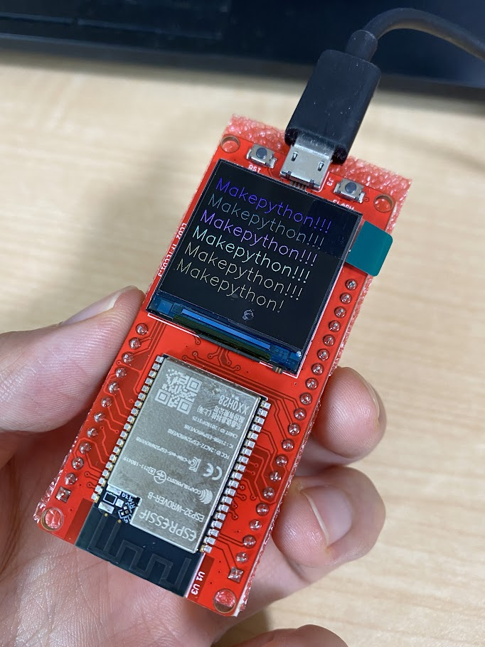
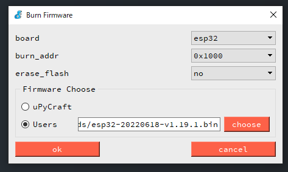
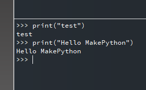
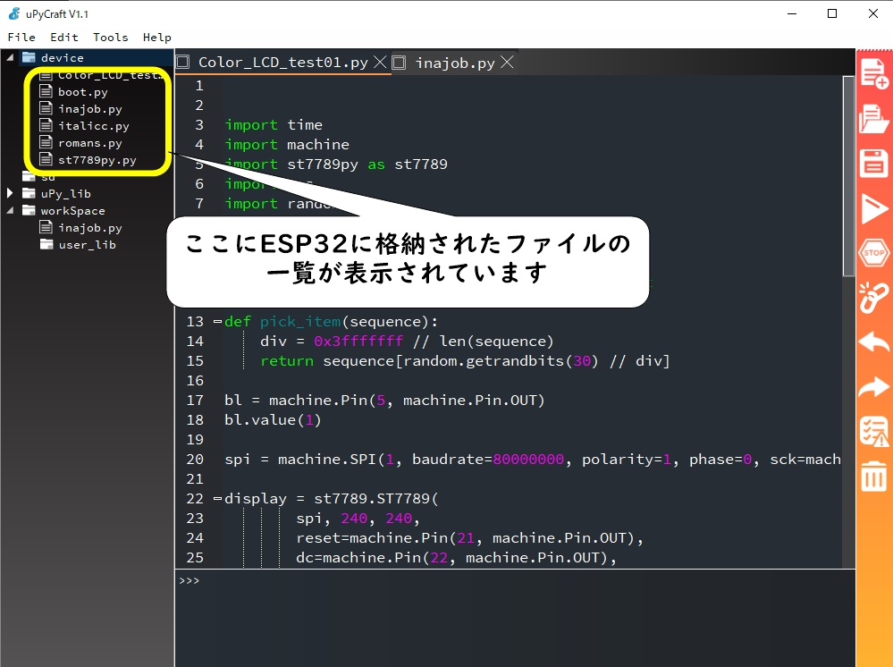
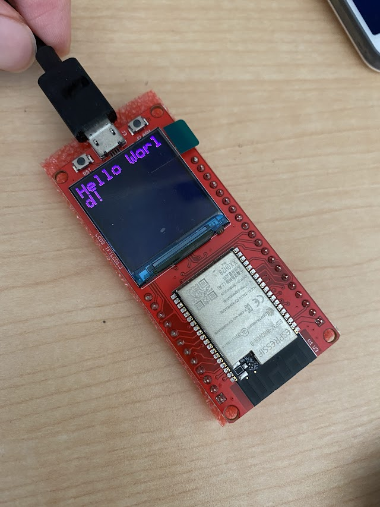

この記事はMakerfabsの提供でお届けします。
今回紹介するMakePython ESP32 Color LCDはMakerfabsから提供いただいたものです。
（ですが、MakePython ESP32 Color LCDはMakerfabsをレビューしたい！と言ったのは自分なので、Makerfabsが無理やりこの商品を押しているわけではなく、inajobの一押しアイテム！、という感じです。）
MakePython ESP32 Color LCDとは
ESP32とディスプレイを搭載した開発ボードです。

- 1.3インチディスプレイ 解像度240*240
- ESP32-WROOM または ESP32-WROVER
- USBシリアル変換IC CP2104
- Mirco USB端子
開発にはMicroPythonや、Arduinoを利用することが出来ます。
まぁESP32を搭載した開発ボードであればどれでもこれらの開発環境は利用できます。
MicroPythonで開発してみる
公式のドキュメントではuPyCraftを使う例が紹介されているので、それに従ってみます。 MicroPythonの開発環境はほかにもたくさんあるので、どれを使ってもよいと思います。
ファームウェアの書き込み
購入時のMakePython ESP32 Color LCDのファームウェアは謎のファームウェアが書き込まれているのですが、どうもMicroPythonではないようだったので、ファームウェアの書き込みから実施する必要がありました。
MicroPythonのファームウェアはここから入手しました。

これを焼きこむと・・

うごいた！
サンプルプログラムの実行
公式ページで紹介されているGitHubのプロジェクトからサンプルプログラムを取得して実行してみます。
ファイルの一覧はこちら https://github.com/Makerfabs/Makerfabs-MakePython-ESP32-Color-LCD/tree/master/workSpace
以下のファイルをすべて書き込んでColor_LCD_test01.pyを実行するとサンプルプログラムが実行できます。
- italicc.py
- romans.py
- st7789.py
- Color_LCD_test01.py
左カラムのdevice以下のファイルがボードに書き込まれたファイルです。
時々このリストの更新に失敗することがあり、何度かUSBケーブルを抜き差ししているとうまくいきました。 （uPyCraftのバグ？）

MicroPythonで独自のプログラムを書いてみる
サンプルで利用している液晶ディスプレイ用のライブラリを利用して、独自のプログラムを実行してみます。
サンプルには線画用のフォントデータしかないので、ビットマップフォントのデータを用意して私のIDの「INA」を表示してみました。
MicroPythonで愚直に書くとアニメーションなどの処理は少し遅いようでした。
まぁアニメーションのような速度が必要な処理はネイティブで書くのが良いのでしょう。
MicroPythonで描画。
— ina_ani@2歳児のパパ (@ina_ani) October 9, 2022
のんびりだねー pic.twitter.com/57m6w2f4eP
上のMicroPythonで作ったものと同じようなプログラムをArduinoで作ったものがこちら。さすがにネイティブなので早いですね。
Arduinoで描画、流石にネイティブだとこのくらい早い pic.twitter.com/EqvCXFlEX5
— ina_ani@2歳児のパパ (@ina_ani) October 9, 2022
Arduinoで開発してみる
もともとESP32の開発はやっていたのでArduino IDEの設定は終わっていました。 液晶の制御のためにはLovyanGFXを使う手法が紹介されていたので、従います。このライブラリもM5Stackなどで利用したことがあったので特に難しいことはありませんでした。
しかしArduino IDEでのコンパイルが「遅い！！」。ESP32のビルドが遅いのは知っているのですが、このプログラムはそれに輪をかけて遅い・・
最近リリースされたArduino IDEの2系やPlatformioを使うともう少し早くビルドできると思います。

まとめ
まぁ普通のESP32の開発ボードなのですが、ディスプレイとESP32の組み合わせで何かを作りたい際にはちょうど良いものだと感じました。
ディスプレイは240*240と高解像度ですがコストパフォーマンスが良く、手元にあるとプロトタイピングの助けになると感じまました。
購入はこちらから→MakePython ESP32 Color LCD


関連記事